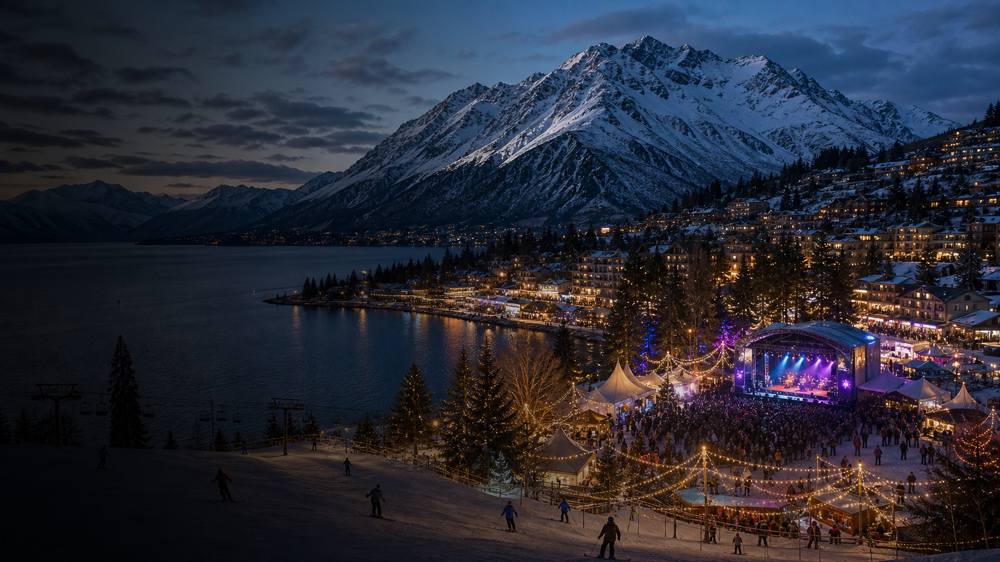

culture event guide
Queenstown Winter Festival
A compact OneSliders guide to what the event is and what visitors should check before going.
 More cultureInterested in more culture?
More cultureInterested in more culture?Explore related events, places and calendar moments.
Queenstown Winter Festival is tracked here as an evergreen event, with the general guide separated from the selected edition.
The year slide keeps practical details together without splitting the guide into extra parts.
Verified records should be added from the official organiser before replacing this placeholder.
- Selected edition: 11 Jun - 21 Jun 2026.
- Host context:
 New Zealand.
New Zealand.
| Year | Host / place | Country |
|---|---|---|
| 2025 | TBC | |
| 2024 | TBC | |
| 2023 | TBC | |
| 2022 | TBC | |
| 2021 | TBC |
Edition guide
Queenstown Winter Festival 2026
Switch between recent editions without leaving the one-slider.
Countdown to the start of this edition.
Dates come from the OneSliders event index for this edition.
Ticket windows and resale rules can change.
The edition slide separates the event into planning-friendly parts.
Broadcast information is edition-specific.
The general event guide stays evergreen while this slide changes by edition.